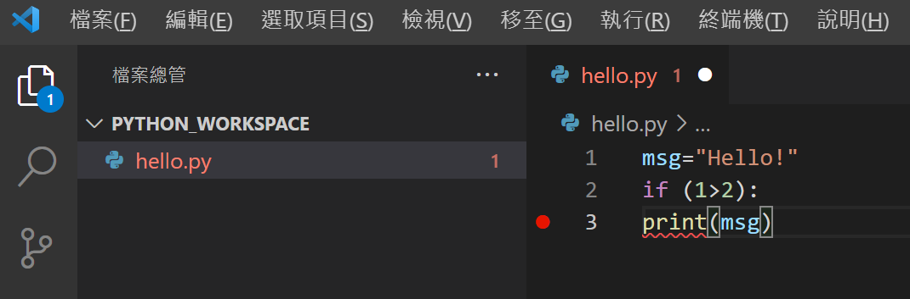

Recipe 2- 語法、變數、資料類型
本單元將說明 Python語法與變數、資料類型簡介、常用運算子
Python語法
所謂的語法是指程式語言撰寫的方式，就像日常語言中文有中文寫法，英文有英文的寫法等，因此程式語言必須按照語言規範撰寫，才能被執行，Python語言規範如下：
- 檔案名稱 檔案名稱不可包含特殊符號及空格，附檔名一定為 .py。
- 程式註解 程式註解用於說明程式或變數用途，讓閱讀程式的人更容易了解程式，程式註解並不會被執行，Python程式註解是在註解文字前加上 # 符號。
- 程式區塊
- 變數名稱 變數用於儲存資料或計算結果，Python變數名稱可由英文字或底線符號(_)開始，同時大小寫英文字的變數名稱代表不同的變數，Python變數可以不須事先宣告儲存類型，同時Python變數資料類型也會隨儲存值而改變
- 變數值設定 要設定變數可透過命令 變數=值 來進行設定，如果有多個變數與值要設定可透過 變數1,變數2=值1,值2 方式來設定。請注意：變數設定完畢後，舊值將被新值所取代
程式區塊用於設定程式隸屬關係，Python使用縮排位置設定程式區塊，相同縮排位置隸屬於相同程式區塊，主程式無縮排，縮排間距的大小並沒有限制，不同的程式區塊最少要間距1個空白。以下圖為例，可以看到程式 print(msg) 出現紅色底顯標示錯誤，因為 print(msg) 屬於條件 if 的程式區塊，因此它最少要在 if 命令之後1個空格以上，而所有屬於 if 程式區塊也必須有相同的間距。

資料類型簡介
資料存入變數時會依照存入資料類型提供不同操作與運算，例如數字用於運算、文字用於非數學運算等，要使用適當的資料類型，設計者必須依照操作對象與目的，選擇最適當的資料類型，Python資料類型包含：文字類型(str )、數字類型(int、float、complex )、布林類型(bool )、順序類型(list、tuple、range )、對應類型(dict )、集合類型(set、frozenset) 、二進制類型(bytes、bytearray、memoryview )，資料類型轉換可透過 資料類型(變數) 來進行轉換，例如 int('123') 會將文字 123 轉為 整數 123，Python語言內建函數 type 可傳回變數資料類型，以下對於各個資料類型進行簡單描述。
文字類型(str )
文字類型變數會將文字字串置於雙引號或單引號內，請注意 "123" 為文字 123 ，不可用於數字計算，如需進行數字計算，則須將 文字資料類型轉為數字資料類型，字串可搭配*用於字串重複，使用方法為'字串值'*數字。。
數字類型(int、float、complex)
數字類型可分為整數(int)、具小數數字(float)、複數(complex)。
布林類型(bool )
布林類型(bool )僅包含兩個值 True 與 False 分別代表對與錯或真與假，一般會搭配 條件 命令使用。
順序類型(list、tuple、range )
順序類型(list、tuple、range )將一連串順序擺放的資料值儲存於變數中，清單(list)將儲存資料置於方括號([] )中，每個值以逗號隔開、元素(tuple)將儲存資料置於小括號(())中，每個值以逗號隔開、範圍(range)則為一整數序列。順序類型可搭配 Python預設函數 len(順序變數) 傳回順序變數項目個數。
清單(list)項目內容可改變，有順序，使用方括號來建立清單，方括號搭配項目參考位置值用於存取清單項目，第一個項目參考位置值為0，清單項目內容值可以不同。清單也可使用像字串重複的動作來建立既定大小的清單，使用方式為變數=[起始值,]*個數值
元素(tuple) 項目內容於元素建立後不可改變，元素項目有順序，使用小括號建立元素，方括號用於項目參考位置值用於存取項目，第一個項目參考位置值為0，元素項目內容值可以不同，如果元素建立後改變內容會產生錯誤。元素也可使用像字串重複的動作來建立既定大小的清單，使用方式為變數=(起始值,)*個數值
範圍(range)項目為順序整數值，有順序，內容建立後不可改變，使用 range(起始值,結束值,間距值) 函數來產生範圍項目，範圍變數使用方括號搭配項目參考位置值來存取項目。
產生範圍變數時，如果沒有設定起始值，起始值預設為 0，如果沒有設定間距值，間距值預設為 1，產生順序整數值由起始值開始，每次增加或減少間距值，一直到結束值為止，請注意 range 不會包含結束值，起始值、結束值、間距值均為整數。
對應類型(dict)
對應類型(dict)將資料定義於大括號({})中，對應項目以項目名稱:項目值表示，使用者可使用對應類型變數搭配方括符來取得項目名稱的值，項目名稱不可重複，項目內容可改變，有順序。
集合類型(set、frozenset)
集合類型(set)將資料定義於大括號({})中，項目資料不可重複，項目內容可增減，沒有順序(資料位置不代表順序)，使用者可以用迴圈搭配運算子in來取得或檢查集合項目。集合類型(frozenset)將可循環資料類型(list、tuple、dict、set)轉換為內容不可增減的集合物件。
運算子
運算子(operator)用於變數與值的運算，常用運算子包含計算、設定、比較、邏輯、隸屬等，接下來每個類別進行介紹。
計算運算子(+、-、*、/、%、//)
計算運算子+、-、*、/、%、// ，除了加、減、乘、除之外，%代表求餘數，//代表整數除法，也就是小數無條件捨去。
設定運算子(=、+=、-=、*=、/=、%=、//=、**=)
設定運算子=、+=、-=、*=、/=、%=、//=、**= ，用於變數設定表示，以 x+=5為例，他代表 x=x+5 ，而**代表次方數。
比較運算子(==、!=、>、>=、<、<=)
比較運算子==、!=、>、>=、<、<=，用於條件比較分別為 等於、不等於、大於、大於等於、小於、小於等於。
邏輯運算子(and、or、not)
邏輯運算子and、or、not，用於串接多個條件比較分別為 且、或、否定。
隸屬運算子(in、not in)
隸屬運算子in、not in，用於集合資料類型，判斷是否隸屬於該集合。